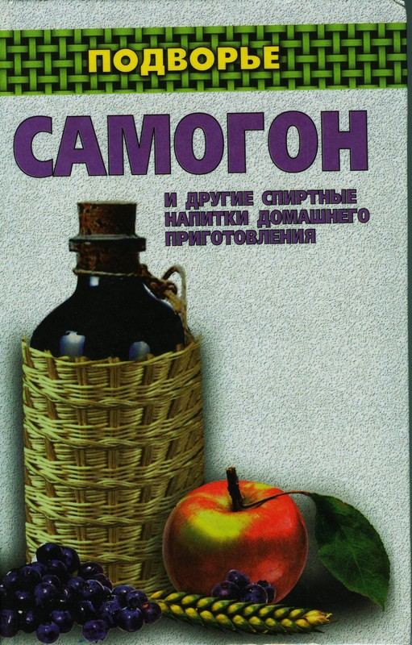

Самогон, водка и настойки ... .

По материалам книги " Самогон и другие спиртные напитки домашнего приготовления " ." Ирины Байдаковой . "
А также из других источников Интернет
Уважаемый Читатель - после ознакомления с Книгой
рекомендую Вам заказать ее бумажное издание.
В книге рассказывается об алкогольных напитках, которые можно приготовить в домашних условиях. Застолье никогда не обходилось без них. Главное, не забывать о чувстве меры. Рецептов напитков очень много, и у каждого своя история, уходящая корнями в глубь веков. Читатель узнает, как сварить самогон, сделать вино, и многое другое, используя в качестве исходного сырья все, что дано Природой.
Книга рассчитана на самый широкий читательский круг.